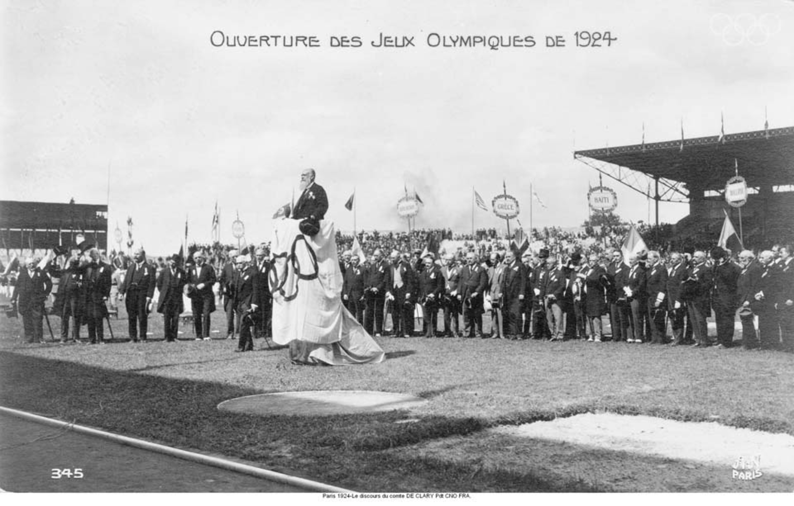
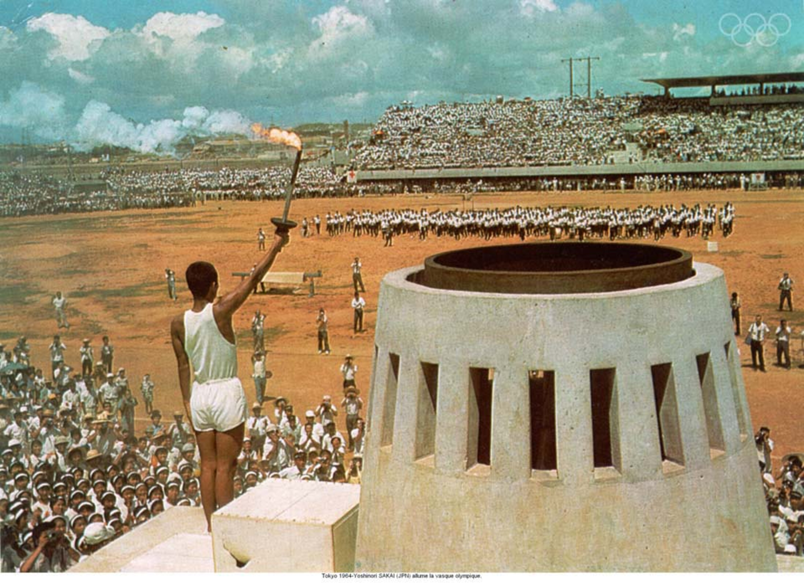

Summer Olympic Games
From Athens 1896 to Tokyo 2020, this story map illustrates the history of the Summer Olympic Games.
Overview
In the map, the spots represent the location of the stadiums that have hosted or will host the Summer Olympic Games from 1896 to 2028.
- 1896 Athens, Greece
- 1900 Paris, France
- 1904 St. Louis, United States
- 1908 London, England
- 1912 Stockholm, Sweden
- 1920 Antwerp, Belgium
- 1924 Paris, France
- 1928 Amsterdam, Netherlands
- 1932 Los Angeles, United States
- 1936 Berlin, Germany
- 1948 London, England
- 1952 Helsinki, Finland
- 1956 Melbourne, Australia
- 1960 Rome, Italy
- 1964 Tokyo, Japan
- 1968 Mexico City, Mexico
- 1972 Munich, West Germany
- 1976 Montreal, Canada
- 1980 Moscow, Soviet Union
- 1984 Los Angeles, United States
- 1988 Seoul, South Korea
- 1992 Barcelona, Spain
- 1996 Atlanta, United States
- 2000 Sydney, Australia
- 2004 Athens, Greece
- 2008 Beijing, China
- 2012 London, England
- 2016 Rio de Janeiro, Brazil
- 2020 Tokyo, Japan
- 2024 Paris, France
- 2028 Los Angeles, United States
1896 Athens
Stadium: Panathenaic Stadium
Countries: 14
Athletes: 241
Events: 43
The first modern Olympics were held in Athens, Greece. In the opening ceremony, King Georgios I and a crowd of 60,000 spectators welcomed 241 participants from 14 nations (all male), who would compete in 43 events, including track and field, gymnastics, swimming, wrestling, cycling, tennis, weightlifting, shooting and fencing. A crowd estimated at more than 60,000 attended the opening day of competition. Members of the royal family of Greece played an important role in the organization and management of the Games.
1990 Paris
Stadium: Vincennes Velodrome
Countries: 24
Athletes: 997 (22 women, 975 men)
Events: 95
Women were allowed to take part for the first time. The Games of 1900 were held in Paris as part of the World’s Fair. The Games suffered from poor organization and marketing. The organisers spread the competitions over five months and under-promoted their Olympic status to such an extent that many athletes never knew they had actually participated in the Olympic Games. Nevertheless, French athletes earned more than 100 medals, by far the most for any nation at the 1900 Games.
1904 St. Louis
Stadium: Francis Field
Countries: 12
Athletes: 651
Events: 95
The events were held in Missouri, United States. Unfortunately, the St Louis Games repeated all of the mistakes of 1900. The various competitions were spread out over four-and-a-half months and became lost in the chaos of a World’s Fair celebrating the purchase of the Louisiana territory from France. As a result, the Games suffered. The 1904 Olympic Games were the first at which gold, silver and bronze medals were awarded for first, second and third place. However,the overall results were predictably lopsided, with Americans earning more than three-fourths of the 95 gold medals and more than 230 medals in all.
1908 London
Stadium: White City Stadium
Countries: 22
Athletes: 2008 (37 women, 1,971 men)
Events: 110
The 1908 Olympic Games were originally awarded to Rome, but were reassigned to London when it became apparent that Rome would not be ready. Despite the short notice, the Games were exceptionally well organised. For the first time, a stadium was specially prepared for the Games. Also, the first to be organized by the various sporting bodies concerned and the first to have an opening ceremony.
1912 Stockholm
Stadium: Stockholm Olympic Stadium (Stockholms Olympiastadion)
Countries: 28
Athletes: 2407 (48 women, 2,359 men)
Events: 102
The Stockholm Games were a model of efficiency. The Swedish hosts introduced the first Olympic use of automatic timing devices for the track events, the photo finish and a public address system. For the first time, competitors in the Games came from all five continents. It was also the first time Japan participated. The modern pentathlon, women’s swimming and women’s diving all made their Olympic debuts.
1920 Antwerp
Stadium: Olympic Stadium (Olympisch Stadion)
Countries: 29
Athletes: 2622 (65 women, 2,561 men)
Events: 156
The 1916 Olympic Games were scheduled to be held in Berlin but were cancelled due to World War I. The 1920 Games were awarded to Antwerp to honour the suffering that had been inflicted on the Belgian people during the war. During the Opening Ceremony, the Olympic flag with the five rings signifying the universality of the Olympic Games was raised for the first time at an Olympic Games. The Olympic oath was taken for the first time by an athlete on behalf of all competitors, and for the first time doves were released as a symbol of peace.
1924 Paris
Stadium: Stade Olympique Yves-du-Manoir
Countries: 44
Athletes: 3,089 (135 women, 2,954 men)
Events: 126
The 1924 Games represented a coming of age for the Olympics. International federations had gained more influence over their respective sports, standardizing the rules of competition, and national Olympic organizations in most countries conducted trials to ensure that the best athletes were sent to compete. After the 1924 Games, tennis was dropped from Olympic competition because of questions over the amateur standing of many participants. The sport did not return to the Olympics until 1988.
At the Closing Ceremony, the practice of raising three flags (one for the International Olympic Committee, one for the host country and one for the future host country of the Games) was instigated.
1928 Amsterdam
Stadium: Olympic Stadium (Olympisch Stadion)
Countries: 46
Athletes: 2,883 (277 women, 2,606 men)
Events: 109
For the first time, a symbolic fire was lit during the Games. The fire was lit in a cauldron that was placed at the top of a tower in the stadium Germany participated in the Games once again, after 16 years of absence, since the 1912 Games. The number of female competitors more than doubled as women were finally allowed to compete in gymnastics and athletics, and Asian athletes won gold medals for the first time.
1932, 1984 & 2028 Los Angeles
Stadium: Los Angeles Memorial Coliseum
Countries: 37 / 140
Athletes:
1932 1,332 (126 women, 1,206 men)
1984 6,829 (1,566 women, 5,263 men)
Events: 117 / 221
In 1932 LA Olympic Games, the poor participation, comparing with 1928, was the result of the worldwide economic depression and the expense of traveling to California. It were held in the middle of the Great Depression, participation in the Games was the lowest since 1904.The LA Games featured the first Olympic Village, and medal winners standing on a podium with the flag of the winner being raised.
Los Angeles was the only city to bid for the right for hosting the 1984 Olympic Games. The 1984 Olympics witnessed the movement of commercialism as an essential element in the staging of the Games.Corporate sponsors were allowed to put Olympic symbols on their products, which were then marketed as the “official” such product of the Olympics. The financial success and high worldwide television ratings raised optimism about the Olympic movement for the first time in a generation.
1936 Berlin
Stadium: Olympic Stadium (Olympiastadion)
Countries: 49
Athletes: 3,963 (331 women, 3,632 men)
Events: 129
The 1936 Olympics were held in a tense, politically charged atmosphere. It was the first to be televised to a limited audience and took place under Hitler's Nazi regime. The Berlin Games are best remembered for Adolf Hitler’s failed attempt to use them to prove his theories of Aryan racial superiority. As it turned out, the most popular hero of the Games was the African-American sprinter and long jumper Jesse Owens, who won four gold medals.

1948 London
Stadium: Wembley Stadium
Countries: 59
Athletes: 4,104 (390 women, 3,714 men)
Events: 136
The Olympic Games had not been held in either 1940 or 1944 due to World War II. the city rose magnificently to the challenge - a true victory over dark times. It was the first to be shown on home television. The women’s competition was expanded to 10 events, and the Empire Pool was the first covered Olympic pool to be used at the Games.

1952 Helsinki
Stadium: Olympic Stadium (Olympiastadion)
Countries: 69
Athletes: 4,955 (519 women, 4,436 men)
Events: 149
OThe 1952 Games were the first Olympics in which the Soviet Union participated, and the international tension caused by the Cold War initially prevailed. A change in the rules for equestrian competitions meant that, for the first time, women could not only enter, but could compete alongside men in the same "mixed" events.
1956 Melbourne
Stadium: Melbourne Cricket Ground (MCG)
Countries: 72
Athletes: 3,314 (376 women, 2,938 men)
Events: 145
This was the first time that the Games had been held in Oceania. The Games were celebrated in November and December. The 1956 Games were also marked by an innovation in the Closing Ceremony. It was decided to let all the athletes parade together, rather than by country, as a symbol of world unity.
The first Games BOYCOTT:The Soviet invasion of Hungary provoked protests from numerous western countries, and some of them withdrew from the Games.
1960 Rome
Stadium: Olympic Stadium (Stadio Olimpico)
Countries: 83
Athletes: 5,338 (611 women, 4,727 men)
Events: 150
The 1960 Olympics were the first to be fully covered by television. The Games in Rome were the last Games in which South Africa was allowed to participate for a period of some 32 years - until 1992 - as the International Olympic Committee could not tolerate the racist policies of the South African government.
1964 Tokyo
Stadium: National Stadium
Countries: 93
Athletes: 5,151 (678 women, 4,473 men)
Events: 163
The 1964 Tokyo Games were the first to be held in Asia. It introduced improved timing and scoring technologies, including the first use of computers to keep statistics. The carrier of the flame, Yoshinori Sakai, was chosen because he was born on 6 August 1945, the day the atomic bomb exploded in Hiroshima, in homage to the victims and as a call for peace in the world.
1968 Mexico City
Stadium: Olympic Stadium (Estadio Olímpico Universitario)
Countries: 112
Athletes: 5,516 (781 women, 4,435 men)
Events: 171
The 1968 Olympic Games in Mexico City were the most politically charged Olympics since the 1936 Games in Berlin. Ten days before the Games were to open, students protesting the Mexican government’s use of funds for the Olympics rather than for social programs.
At the height of the US Civil Rights Movement during the 1968 Olympic Games, African-Americans runners African-American runners Tommie Smith and John Carlos staged a protest at the medal ceremony. They were stripped of their medals but inspired a whole generation of black athletes.
1972 Munich
Stadium: Olympic Stadium (Olympiastadion)
Countries: 121
Athletes: 7,134 (1,059 women, 6,075 men)
Events: 195
The 11 days of these Games were perhaps the greatest Olympic festival ever. However, the Games were interrupted when eight Arab terrorists entered the Olympic Village, took hostage and then killed 11 members of the Israeli Olympic team. The Olympic Games were suspended for 34 hours and a mass was held in the main stadium to commemorate the victims. But the Games continued at the insistence of the IOC President Avery Brundage, who famously said "The Games must go on !"
1976 Montreal
Stadium: Olympic Stadium (Stade Olympique)
Countries: 92
Athletes: 6,084 (1,260 women, 4.824 men)
Events: 198
The 1976 Games drew more attention to the apparent problems of the Olympic movement. Taiwan also boycotted, when Canada, which officially recognized the People’s Republic of China, would not permit Taiwan to be identified at the Games as the Republic of China. There was also concern that the amateur spirit of the Games had been undermined by the growing commercial influence on sports in the West and the pervasive government control of athletes in the Eastern bloc countries. The Montreal Games were a financial disaster, placing a burden of debt on the people of Canada and Quebec that lasted for decades.
1980 Moscow
Stadium: Grand Sports Arena of the Luzhniki Olympic Complex
Countries: 80
Athletes: 5,179 (1,115 women, 4,064 men)
Events: 203
The Soviet invasion of Afghanistan in December 1979 led to the largest boycott in the history of the Olympic movement. A US-led boycott reduced the number of participating nations to 80, the lowest number since 1956. The Games were also hurt by rowdy behavior from spectators, cheating by officials, and security so intrusive that winners in track events were physically prevented from taking victory laps.
1988 Seoul
Stadium: Olympic Stadium
Countries: 159
Athletes: 8,391
Events: 237
Political problems threatened to return to centre stage at the 1988 Games. North Korea, still technically at war with South Korea, complained that it should have cohost status. The IOC made some concessions to North Korea, but North Korea did not find them satisfactory and boycotted; several other countries stayed away from Seoul in solidarity with North Korea. .
1992 Barcelona
Stadium: Olympic Stadium (Estadio Olímpico Lluís Companys)
Countries: 46
Athletes: 2,883 (277 women, 2,606 men)
Events: 109
The 1992 Games were perhaps the most-successful modern Olympics. The dramatic political changes that had swept across eastern Europe had a tremendous effect on the Olympics. For the first time in three decades, there was no boycott. Due to important global political changes, Apartheid had been abolished in South Africa. Then there was the fall of the Berlin Wall and the reunification of West and East Germany. Communism had ended and the Soviet Union was divided into 15 separate countries which participated as a "unified team”.
1996 Atlanta
Stadium: Centennial Olympic Stadium
Countries: 197
Athletes: 10,318 (3,512 women, 6,806 men)
Events: 271
For the first time in Olympic history, all 197 recognised National Olympic Committees were represented at the Games. Selected over Athens, Greece, to host the Centennial Summer Games, Atlanta staged one of the most extravagant Games in Olympic history. It cost nearly $1.7 billion. For the first time, the Games received no governmental financial support. Instead, corporate sponsors and television rights were relied upon to defray costs.
2000 Sydney
Stadium: Stadium Australia
Countries: 199 (+ four individual athletes (IOA))
Athletes: 10,651 (4,069 women, 6,582 men)
Events: 300
Sydney was chosen as host city of the 2000 Olympics. The IOC was attracted to the city’s long history of enthusiasm for sports. The opening ceremonies celebrated the history of Australia, especially the unique culture and contributions of the Aboriginal peoples of the continent.
2004 Athens
Stadium: Olympic Stadium
Countries: 201
Athletes: 10,625 athletes (4,329 women, 6,296 men)
Events: 301
The 2004 Olympic Games returned home to Greece, the birthplace of the ancient Games, and site of the inaugural modern Olympics. A record 201 National Olympic Committees participated in the Olympic Games. The overall tally for events on the programme was 301. Popularity in the Games also soared, as 3.9 billion people had access to the television coverage.
2008 Beijing
Stadium: Beijing National Stadium
Countries: 204
Athletes: 10,942 (4,637 women, 6,305 men)
Events: 302
In 2008 the Olympic Games were held in China for the first time. The Beijing organizing committee earned high marks for the facilities that were constructed for the event, particularly the award-winning National Stadium. The athletes’ achievements were astonishing, the organization was excellent; the venues breathtaking and the anti-doping tests were stricter. Several hundred million watched worldwide on TV as more than 40 world records and over 130 Olympic records were broken.

2012 London
Stadium: Olympic Stadium
Countries: 204
Athletes: 10,568
Events: 302
In 2012 London became the first city to host the modern Games three times, having previously been the site of the 1908 and 1948 Olympic Games.
The London Games were dominated by two of the greatest Olympians of all time: Jamaican sprinter Usain Bolt and American swimmer Michael Phelps. Phelps became the most decorated athlete in Olympic history by capturing six medals to bring his lifetime total to 22.
2016 Rio de Janeiro
Stadium: Maracanã Stadium (Estádio do Maracanã)
Countries: 207
Athletes: 11,238
Events: 306
The buildup to the Rio Games was beset by more problems than any other recent Olympiad. The Rio Olympics were plagued by massive cost overruns and construction that ran far behind schedule. However,it eventually celebrated and showcased sport, thanks to the city’s stunning setting and a desire to lift event presentation to new heights. At the same time, Rio 2016 was an opportunity to deliver the broader aspirations for the long-term future of the city, region, and country – an opportunity to hasten the transformation of Rio de Janeiro into an even greater global city.
2020 Tokyo (Postponed)
Stadium: New National Stadium
Due to the Covid-19 outbreak, the Olympic Games Tokyo 2020 were postponed for the first time in their history. The Opening Ceremony of the Olympic Games Tokyo 2020 will now be held on 23 July 2021. Tokyo and the whole World are expecting the Olympic can be successfully held before next summer.
Effect
- Estimated Losses from 1-year postponement: $6 billion
- Estimated Losses if cancel: $37 billion
- Impact on a host of other major tournaments and sports
- Everything is uncertain
- Athletes Lives - health risks & disruption to their training
- Media: Sponsors & Advertisements
- etc.

2024 Paris
Stadium: Stade de France